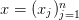
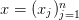
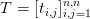
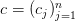
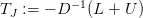
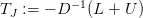

4.6 Métodos iterativos para sistemas lineares
Na seção anterior tratamos de métodos diretos para a resolução de sistemas lineares. Em um método direto (por exemplo, solução via fatoração LU) obtemos uma aproximação da solução depois de realizarmos um número finito de operações (só teremos a solução ao final do processo).
Veremos nessa seção dois métodos iterativos básicos para obter uma aproximação para a solução de um sistema linear. Geralmente em um método iterativo iniciamos com uma aproximação para a solução (que pode ser ruim) e vamos melhorando essa aproximação através de sucessivas iterações.
4.6.1 Método de Jacobi
O método de Jacobi pode ser obtido a partir do sistema linear

Isolando o elemento  da primeira equação temos
da primeira equação temos
 | (4.24) |
Note que utilizaremos os elementos  da iteração
da iteração  (a direita da equação)
para estimar o elemento
(a direita da equação)
para estimar o elemento  da próxima iteração.
da próxima iteração.
Da mesma forma, isolando o elemento  de cada equação
de cada equação  , para todo
, para todo
 podemos construir a iteração
podemos construir a iteração

Em notação mais compacta, o método de Jacobi consiste na iteração


 .
. 
Código Python: Jacobi
import numpy as np
from numpy import linalg
def jacobi(A,b,x0,tol,N):
#preliminares
A = A.astype(’double’)
b = b.astype(’double’)
x0 = x0.astype(’double’)
n=np.shape(A)[0]
x = np.zeros(n)
it = 0
#iteracoes
while (it < N):
it = it+1
#iteracao de Jacobi
for i in np.arange(n):
x[i] = b[i]
for j in np.concatenate((np.arange(0,i),np.arange(i+1,n))):
x[i] -= A[i,j]*x0[j]
x[i] /= A[i,i]
#tolerancia
if (np.linalg.norm(x-x0,np.inf) < tol):
return x
#prepara nova iteracao
x0 = np.copy(x)
raise NameError(’num. max. de iteracoes excedido.’)
4.6.2 Método de Gauss-Seidel
Assim como no método de Jacobi, no método de Gauss-Seidel também isolamos o
elemento  da equação
da equação  . Porém perceba que a equação para
. Porém perceba que a equação para  depende
de
depende
de  na iteração
na iteração  . Intuitivamente podemos pensar em usar
. Intuitivamente podemos pensar em usar  que
acabou de ser calculado e temos
que
acabou de ser calculado e temos
 |
Aplicando esse raciocínio podemos construir o método de Gauss-Seidel como

Em notação mais compacta, o método de Gauss-Seidel consiste na iteração:


 .
. 
Código Python: Gauss-Seidel
import numpy as np
from numpy import linalg
def gauss_seidel(A,b,x0,tol,N):
#preliminares
A = A.astype(’double’)
b = b.astype(’double’)
x0 = x0.astype(’double’)
n=np.shape(A)[0]
x = np.copy(x0)
it = 0
#iteracoes
while (it < N):
it = it+1
#iteracao de Jacobi
for i in np.arange(n):
x[i] = b[i]
for j in np.concatenate((np.arange(0,i),np.arange(i+1,n))):
x[i] -= A[i,j]*x[j]
x[i] /= A[i,i]
print(x[i],A[i,i])
#tolerancia
if (np.linalg.norm(x-x0,np.inf) < tol):
return x
#prepara nova iteracao
x0 = np.copy(x)
raise NameError(’num. max. de iteracoes excedido.’)
4.6.3 Análise de convergência
Nesta seção, discutimos sobre a análise de convergência de métodos iterativos
para solução de sistema lineares. Para tanto, consideramos um sistema linear
 , onde
, onde ![A = [a ]n,n
i,ji,j=1](main2111x.png) é a matriz (real) dos coeficientes,
é a matriz (real) dos coeficientes,  é
um vetor dos termos constantes e  é o vetor incógnita. No decorrer,
assumimos que
é
um vetor dos termos constantes e  é o vetor incógnita. No decorrer,
assumimos que  é uma matriz não-singular.
é uma matriz não-singular.
Geralmente, métodos iterativos são construídos como uma iteração de ponto fixo. No caso de um sistema linear, reescreve-se a equação matricial em um problema de ponto fixo equivalente, i.e.:
 |
onde  é chamada de matriz da iteração e  de vetor
da iteração. Construídos a matriz  e o vetor
e o vetor  , o método iterativo consiste
em computar a iteração:
, o método iterativo consiste
em computar a iteração:
 |
onde  é uma aproximação inicial dada.
é uma aproximação inicial dada.
Afim de construirmos as matrizes e os vetores de iteração do método de
Jacobi e de Gauss-Seidel, decompomos a matriz  da seguinte forma:
da seguinte forma:
 |
onde  é a matriz diagonal
é a matriz diagonal  , i.e.:
, i.e.:
|
|
e, respectivamente,  e
e  são as seguintes matrizes triangular inferior e
superior:
são as seguintes matrizes triangular inferior e
superior:
 |
Exemplo 4.6.3. Considere o seguinte sistema linear:
 identificando a matriz dos
coeficientes
identificando a matriz dos
coeficientes  , o vetor incógnita
, o vetor incógnita  e o vetor dos termos constantes
e o vetor dos termos constantes  . Em
seguida, faça a decomposição
. Em
seguida, faça a decomposição  .
.
Solução. A forma matricial deste sistema é  , onde:
, onde:
 |
A decomposição da matriz  nas matrizes
nas matrizes  triangular inferior,
triangular inferior,  diagonal e
diagonal e
 triangular superior é:
triangular superior é:
 |
Em Python, podemos construir as matrizes  ,
,  e
e  , da seguinte
forma:
, da seguinte
forma:
... [-1,-4,1],
... [1,-2,5]],
... dtype=’double’)
>>> D = np.diag(np.diag(A))
>>> L = np.tril(A)-D
>>> U=np.triu(A)-D

Iteração de Jacobi
Vamos, agora, usar a decomposição discutida acima para construir a matriz de
iteração  e o vetor de iteração
e o vetor de iteração  associado ao método de Jacobi. Neste
caso, temos:
associado ao método de Jacobi. Neste
caso, temos:
|
|
com  uma aproximação inicial dada, sendo  a matriz de
iteração e
uma aproximação inicial dada, sendo  a matriz de
iteração e  o vetor da iteração.
o vetor da iteração.
Exemplo 4.6.4. Construa a matriz de iteração  e o vetor de iteração
e o vetor de iteração
 do método de Jacobi para o sistema dado no Exemplo 4.6.3.
do método de Jacobi para o sistema dado no Exemplo 4.6.3.
Solução. A matriz de iteração é dada por:
 |
O vetor da iteração de Jacobi é:
 |
Em python, podemos computar  e
e  da seguinte forma:
da seguinte forma:
>>> cJ = np.linalg.inv(D).dot(b);

Iteração de Gauss-Seidel
A forma matricial da iteração do método de Gauss-Seidel também pode ser
construída com base na decomposição  . Para tando, fazemos:
. Para tando, fazemos:

 |
com  uma aproximação inicial dada, sendo
uma aproximação inicial dada, sendo  a matriz de
iteração e
a matriz de
iteração e  o vetor da iteração.
o vetor da iteração.
Exemplo 4.6.5. Construa a matriz de iteração  e o vetor de iteração
e o vetor de iteração
 do método de Gauss-Seidel para o sistema dado no Exemplo 4.6.3.
do método de Gauss-Seidel para o sistema dado no Exemplo 4.6.3.
Solução. A matriz de iteração é dada por:
 |
O vetor da iteração de Gauss-Seidel é:
 |
Em Python, podemos computar  e
e  da seguinte forma:
da seguinte forma:
-->cG = np.linalg.inv(L+D).dot(b);

Condições de convergência
Aqui, vamos discutir condições necessárias e suficientes para a convergência de
métodos iterativos. Isto é, dado um sistema  e uma iteração:
e uma iteração:
 |
 dado, estabelecemos condições nas quais
dado, estabelecemos condições nas quais  , onde
, onde  é a solução
do sistema dado, i.e.
é a solução
do sistema dado, i.e.  ou, equivalentemente,
ou, equivalentemente,  .
.


Primeiramente, suponhamos que  ,
,  . Como (veja [8],
Lema 2, pág. 12):
. Como (veja [8],
Lema 2, pág. 12):
 |
temos  , o que mostra a implicação.
, o que mostra a implicação.
Agora, suponhamos que  e seja
e seja  . Então, existe
. Então, existe
 tal que (veja [8], Teorema 3, página 12):
tal que (veja [8], Teorema 3, página 12):
 |
Assim, temos:
 |
Da equivalência entre as normas segue a recíproca.


 . Seja
. Seja
 um autovalor de
um autovalor de  e
e  um autovetor associado, i.e.
um autovetor associado, i.e.  .
Então,
.
Então,  . Além disso, temos
. Além disso, temos  , logo
, logo
 , o que garante que
, o que garante que  é não singular. Agora, mostramos que
é não singular. Agora, mostramos que
 admite a expansão acima. Do Lema
admite a expansão acima. Do Lema 
 .
.

Teorema 4.6.1. A sequência recursiva  dada por:
dada por:
 |
converge para solução de  para qualquer escolha de
para qualquer escolha de  se, e
somente se,
se, e
somente se,  .
.
 . Observamos que:
. Observamos que:

 |
Ora, se  é a solução de
é a solução de  , então
, então  , i.e.
, i.e.
 . Logo, temos demonstrado que
. Logo, temos demonstrado que  converge para a solução de
converge para a solução de
 , para qualquer escolha de
, para qualquer escolha de  .
.
Agora, suponhamos que  converge para
converge para  solução de
solução de  ,
para qualquer escolha de
,
para qualquer escolha de  . Seja, então,
. Seja, então,  um vetor arbitrário e
um vetor arbitrário e
 . Observamos que:
. Observamos que:

 , temos, :
, temos, :
 |
Como  é arbitrário, da Observação 4.6.1 temos
é arbitrário, da Observação 4.6.1 temos  ,
,
 . Então, o Lema 4.6.1 garante que
. Então, o Lema 4.6.1 garante que  .
.

Observação 4.6.2. Pode-se mostrar que tais métodos iterativos tem taxa de convergência super linear com:
 |
Para mais detalhes, veja [8], pág. 61-64.
Exemplo 4.6.6. Mostre que, para qualquer escolha da aproximação inicial, ambos os métodos de Jacobi e Gauss-Seidel são convergentes quando aplicados ao sistema linear dado no Exemplo 4.6.3.
Solução. Do Teorema 4.6.1, vemos que é necessário e suficiente que
 e
e  . Computando estes raios espectrais, obtemos
. Computando estes raios espectrais, obtemos
 e
e  . Isto mostra que ambos os métodos serão
convergentes.
. Isto mostra que ambos os métodos serão
convergentes.

Condição suficiente
Uma condição suficiente porém não necessária para que os métodos de Gauss-Seidel e Jacobi convirjam é a que a matriz seja estritamente diagonal dominante.


Definição 4.6.2. Uma matriz  é diagonal dominante quando
é diagonal dominante quando
 |
e para ao menos um  ,
,  é estritamente maior que a soma dos elementos fora
da diagonal.
é estritamente maior que a soma dos elementos fora
da diagonal.
Teorema 4.6.2. Se a matriz  for diagonal dominante8 ,
então os métodos de Jacobi e Gauss-Seidel serão convergentes independente
da escolha inicial
for diagonal dominante8 ,
então os métodos de Jacobi e Gauss-Seidel serão convergentes independente
da escolha inicial  .
.
Se conhecermos a solução exata  do problema, podemos calcular o erro
relativo em cada iteração como:
do problema, podemos calcular o erro
relativo em cada iteração como:
 |
Em geral não temos  , entretanto podemos estimar o vetor resíduo
, entretanto podemos estimar o vetor resíduo
 . Note que quando o erro tende a zero, o resíduo também tende
a zero.
. Note que quando o erro tende a zero, o resíduo também tende
a zero.
Teorema 4.6.3. O erro relativo e o resíduo estão relacionados como (veja [3])
 |
onde  é o número de condicionamento.
é o número de condicionamento.
Exemplo 4.6.7. Ambos os métodos de Jacobi e Gauss-Seidel são convergentes para o sistema dado no Exemplo 4.6.3, pois a matriz dos coeficientes deste é uma matriz estritamente diagonal dominante.
Exercícios
E 4.6.1. Considere o problema de 5 incógnitas e cinco equações dado por

- Escreva na forma
 e resolva usando eliminação gaussiana para
e resolva usando eliminação gaussiana para
 no Scilab.
no Scilab.
- Obtenha o vetor incógnita
 com
com  usando o comando
usando o comando  .
.
- Obtenha o vetor incógnita
 com
com  usando Jacobi com
tolerância
usando Jacobi com
tolerância  . Compare o resultado com o resultado obtido no item
d.
. Compare o resultado com o resultado obtido no item
d.
- Obtenha o vetor incógnita
 com
com  usando Gauss-Seidel com
tolerância
usando Gauss-Seidel com
tolerância  . Compare o resultado com o resultado obtido no item
d.
. Compare o resultado com o resultado obtido no item
d.
- Discuta com base na relação esperada entre tolerância e exatidão conforme estudado na primeira área para problemas de uma variável.
Resposta.
E 4.6.2. Resolva o seguinte sistema pelo método de Jacobi e Gauss-Seidel:
 e inicialize com
e inicialize com
 .
.
E 4.6.3. Refaça a questão ?? construindo um algoritmo que implemente os métodos de Jacobi e Gauss-Seidel.
E 4.6.4. Considere o seguinte sistema de equações lineares:
 .
.
Resposta.  ,
,  ,
,  ,
,  ,
,  ,
,  ,
,  ,
,  ,
,  ,
,  ,
,

E 4.6.5. Resolva o problema 4.8.1 pelos métodos de Jacobi e Gauss-Seidel.
E 4.6.6. Faça uma permutação de linhas no sistema abaixo e resolva pelos métodos de Jacobi e Gauss-Seidel:
Resposta. Permute as linhas 1 e 2.
* As versões do livro disponíveis no site podem estar desatualizadas, veja a versão PDF atual no repositório GitHub oficial do projeto.
- IME - UFRGS